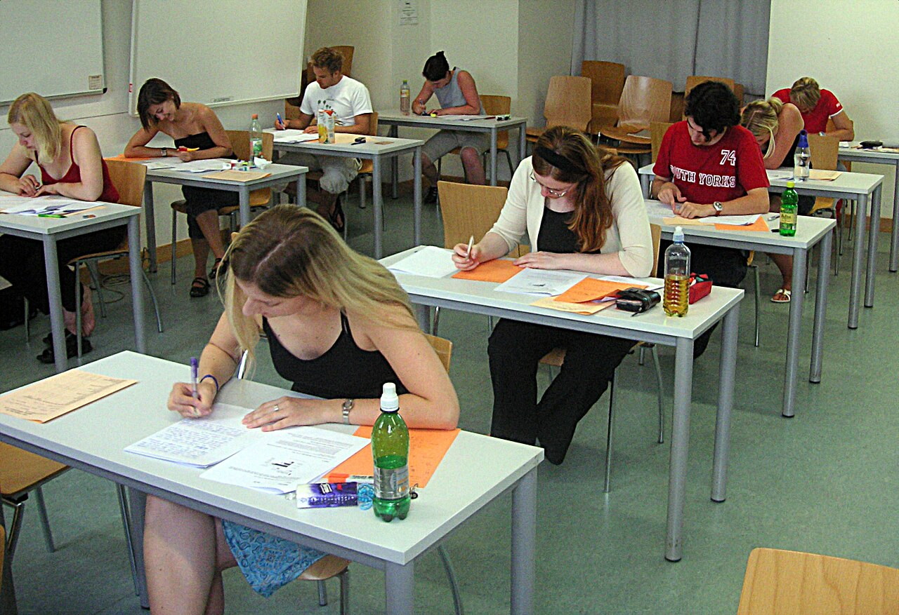

Do I Need IELTS for These Scholarships? Programme-by-Programme Answer
Last updated: October 2026. English rules change between cycles. Verify the current rule on the official programme or university page before booking a test.

There is no single IELTS answer for scholarships. Each programme sets its own rule, and some set no rule at all. The table below gives the honest short answer for each programme on this site, and the sections after it explain the waivers that save many applicants a test fee.
| Programme | English rule in short |
|---|---|
| Chevening | No Chevening test since 2020. Your three UK universities may each require IELTS or an equivalent. |
| Fulbright Pakistan (USEFP) | No English score with the initial application. Shortlisted and selected candidates take TOEFL. IELTS is not accepted. |
| DAAD EPOS | IELTS or TOEFL for English-taught courses; Medium of Instruction letter accepted at most programmes. German at B1 or above for German-taught courses. |
| Erasmus Mundus | Set per programme, often around IELTS 6.5 or an equivalent. Some programmes waive it if your degree was taught in English. |
| Türkiye Bursları | No universal IELTS requirement. A Turkish language year is included; English proof depends on your programme's language. |
| SUSI (USA exchange) | Working English is expected, since the institute is taught in English. Check the embassy call for the current cycle's wording. |
| UN internships | Strong English or French is required by the UN Secretariat; some posts ask for a second official language. |
Chevening: no test from Chevening, tests from universities
Chevening removed its own English language requirement in 2020. That does not mean you can ignore English: you need an unconditional offer from at least one of your three chosen UK universities, and each university sets its own requirement, commonly around IELTS 6.5, sometimes higher for law, journalism or similar fields. Check all three universities' requirements before you finalise your course choices, not after you are shortlisted.
Fulbright Pakistan: TOEFL later, never IELTS
USEFP's order is unusual and worth repeating: no English score with the initial application, TOEFL for shortlisted and selected candidates, and IELTS is not accepted for this programme. If you spend your Fulbright preparation months on IELTS, you have prepared for the wrong test. Put that time into the GRE, which is mandatory before applying. See our Fulbright Pakistan guide.
DAAD: the Medium of Instruction waiver
For English-taught DAAD courses, IELTS or TOEFL is the standard proof, but a Medium of Instruction (MOI) certificate is accepted instead of IELTS at most programmes. An MOI is a letter from your university, on letterhead and signed by an authorised officer, stating plainly that your degree was taught entirely in English. It is not a self-written statement, and it is not your transcript: it must say, in words, that English was the medium of instruction. Institutional TOEFL is generally not accepted for DAAD courses, so check which test format your course wants before booking. For German-taught courses, German at B1 level or above is the usual requirement.
Erasmus Mundus: per programme, and waivers vary
Each consortium sets its own English rule, often around IELTS 6.5 or an equivalent test, and some waive the test if your previous degree was taught in English. Because the rule is per programme, there is no shortcut: open each programme's eligibility page in the catalogue and read its English section. A waiver that one consortium accepts may not be accepted by another.
Türkiye Bursları: language follows the programme
There is no universal IELTS requirement. The scholarship includes a Turkish language year, and if your programme is taught in Turkish, that year is part of the plan. If your programme is taught in English, check that programme's own language rule. Do not buy an IELTS test for Türkiye Bursları until a programme you actually chose asks for one.
Which test should you take if you are unsure?
If you plan to apply to several programmes, IELTS Academic is the most widely accepted test across this site's programmes, with TOEFL iBT as the main alternative — except for Fulbright Pakistan, where only TOEFL counts and only after shortlisting. Both IELTS and TOEFL scores are generally valid for two years, but some universities count validity to the course start date rather than the application date, so check that detail if your score is ageing. Book early: test centres fill up, results take days to weeks depending on format, and a late score can cost you an offer deadline.
For Indian students
The same programme rules apply, with one difference worth noting: for Fulbright in India, USIEF fellowship pages list English scores among the application documents, and the accepted tests vary by fellowship — check the current fellowship page on usief.org.in rather than assuming the Pakistani rule. For Chevening, DAAD, Erasmus Mundus and Türkiye Bursları, the English rules in the table above apply identically to Indian applicants.